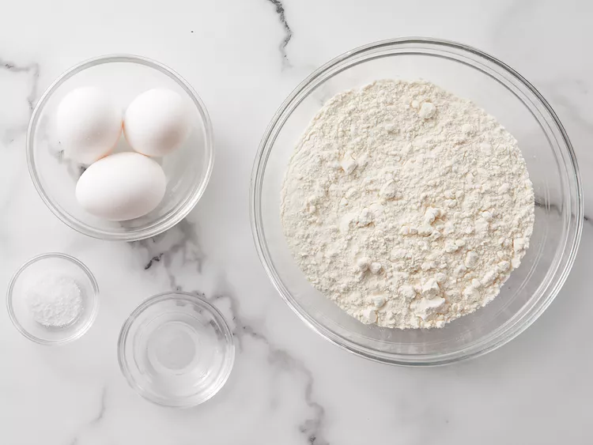
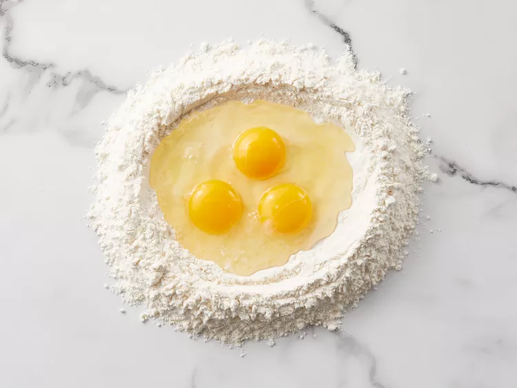
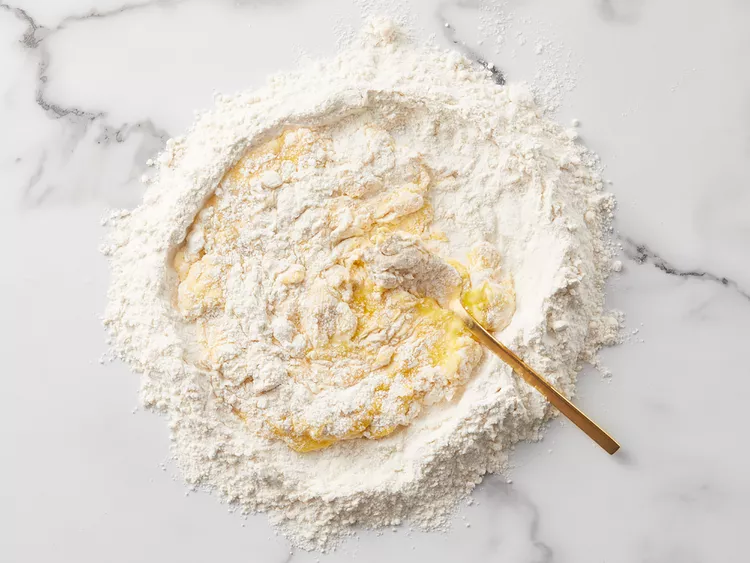
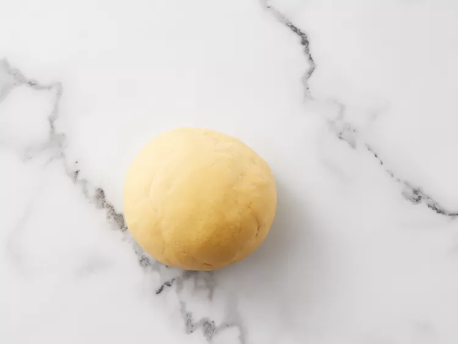
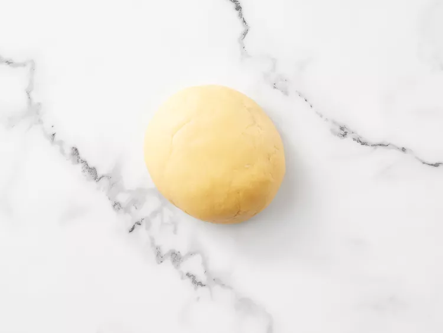
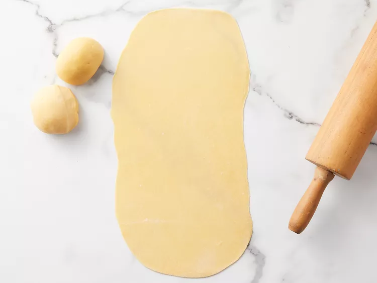
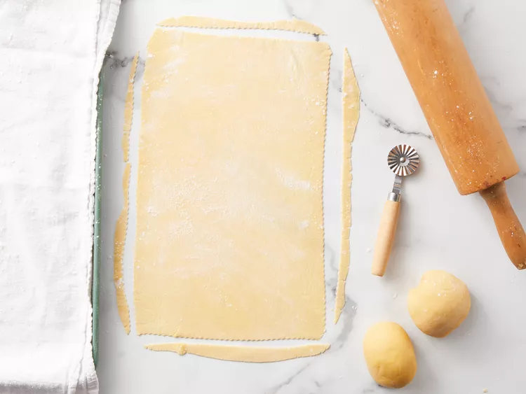

Homemade Lasagana noodles
I. Ingredients
- 2 ¼ cups Italian-style tipo 00 flour, plus additional for dusting
- 3 large eggs
- 1 pinch salt
- 1 tablespoon water as needed
II. The recipe
Detailed instructions:
- Gather all ingredients.

- Place flour on a marble or wooden work surface. Make a well in the center and crack in eggs; add salt.

- Gently beat eggs using a fork, incorporating surrounding flour, until mixture is runny. Bring remaining flour into the mixture using a bench scraper until dough forms a ball. Mix in water, 1 tablespoon at a time, if dough feels too stiff.


- Knead dough with your hands by flattening, stretching it, and folding the top towards the center. Turn 45 degrees and repeat until dough is soft and smooth, about 10 minutes.
- Shape dough into a ball. Place in a bowl and cover with plastic wrap. Refrigerate until firm, 30 minutes to 1 hour.

- Divide dough into 3 equal portions. Take one piece and flatten it a bit with your hands. Dust a work surface with flour and roll dough out using a rolling pin 5 to 6 times. Turn dough 45 degrees and roll out again, 5 to 6 times. Keep rolling and turning in the same way until dough is evenly very thin. When you hold up the dough, you should be able to see your fingers through it.

- Cut pasta dough into rectangular sheets to fit your baking dish using a pastry wheel or a knife. Transfer lasagna sheets to a floured kitchen towel and let air-dry for about 30 minutes before assembling.

**Recipe Tip: If you want to pre-make the pasta, air-dry it overnight, dusting with more flour if it's still too wet. Once completely dry, it will become stiff. Store in a paper bag, and use within a couple of days.